A cat with a life of its own
It sits on top of the taskbar, out of your way, and gets on with its day. It is click-through where it is transparent, hides for fullscreen games and videos, and copes with auto-hide taskbars and multiple monitors. Every behaviour has a switch in Settings.
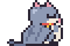
Walks, sits and grooms
Strolls along the taskbar, washes its face, blinks and flicks its tail.
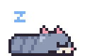
Naps when you're away
Step away and it curls up. Come back and it takes its time waking.
Grumbles if you wake it
Click a sleeping cat and you'll get a startled hop, a glare and a yawn.
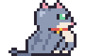
Hunts your mouse
Sometimes it follows the cursor along the taskbar, and sometimes it pounces.
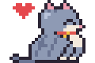
Likes a pat
Click it and it purrs. Pick it up and it hangs by the scruff or the belly, depending on where you grab.
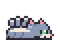
Asks for belly scratches
Every so often it rolls over and asks. Ignore it and it sulks for a moment.
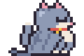
Break reminders and focus timer
A speech bubble tells you when it's time to stretch, and the cat holds up a focus timer while you work.
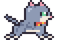
Feels your PC working
When the CPU is busy, the cat hurries and breaks a sweat.
Pick your cat
Eleven cats to choose from in Settings. The original cat also lets you pick its fur colour and pattern; the other five come in a cartoon style and a realistic one.
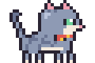
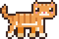
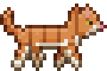
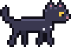
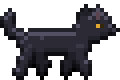
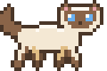
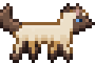
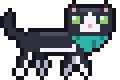
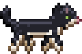
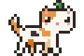
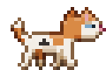
Download
Desktop Buddy runs on Windows 11. It's a single DesktopBuddy.exe with nothing to install.
- Download
DesktopBuddy.exeand run it. The cat appears on your taskbar and an icon shows up in the tray. - Windows may warn about an unrecognised app because the exe isn't signed yet. Choose More info, then Run anyway.
- Right-click the tray icon for Settings: pick a cat, turn behaviours on or off, and choose whether it starts with Windows.
Want the very latest? Every build of main also produces the exe. Open the latest build run, scroll to Artifacts and download DesktopBuddy-win-x64 (you need to be signed in to GitHub).
Build it yourself
You need the .NET 8 SDK on Windows.
git clone https://github.com/theaob/desktop-buddy
cd desktop-buddy
dotnet run --project src/DesktopBuddy